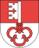
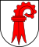
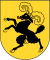
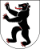
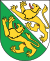
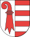

| Brasão | Cantão | Adesão | Capital | População | Área km² | Comunas | Idioma oficial |
|---|---|---|---|---|---|---|---|
| Zürich | 1351 | Zürich | 1.284.052 | 1729 | 171 | alemão | |
| Bern | 1353 | Bern | 958.897 | 5959 | 398 | alemão, francês | |
| Luzern | 1332 | Luzern | 359.110 | 1493 | 97 | alemão | |
| Uri | 1291 | Altdorf | 34.948 | 1077 | 20 | alemão | |
| Schwyz | 1291 | Schwyz | 138.832 | 908 | 30 | alemão | |
|  | Obwalden | 1291 | Sarnen | 33.755 | 491 | 7 | alemão |
|
Nidwalden | 1291 | Stans | 40.012 | 276 | 11 | alemão |
| Glarus | 1352 | Glarner | 38.084 | 685 | 27 | alemão | |
| Zug | 1352 | Zug | 107.171 | 239 | 11 | alemão | |
| Fribourg | 1481 | Fribourg | 258.252 | 1671 | 182 | francês, alemão | |
| Solothurn | 1481 | Solothurn | 248.613 | 791 | 126 | alemão | |
| Basel-Stadt | 1501 | Basel | 184.822 | 37 | 3 | alemão | |
|  | Basel-Landschaft | 1501 | Liestal | 267.166 | 518 | 86 | alemão |
|  | Schaffhausen | 1501 | Schaffhausen | 73.866 | 298 | 33 | alemão |
| Appenzell-Ausserrhoden | 1513 | Herisau | 52.509 | 243 | 20 | alemão | |
|  | Appenzell-Innerrhoden | 1513 | Appenzell | 15.300 | 173 | 6 | alemão |
| St. Gallen | 1803 | St. Gallen | 461.810 | 2.026 | 89 | alemão | |
|
Graubünden/Grisons | 1803 | Coire | 187.920 | 7105 | 208 | alemão, romanche, italiano |
| Aargau/Argovie | 1803 | Aarau | 574.813 | 1404 | 231 | alemão | |
|  | Thurgau/Thurgovie | 1803 | Frauenfeld | 235.764 | 991 | 80 | alemão |
| Ticino | 1803 | Bellinzona | 324.851 | 2.812 | 201 | italiano | |
| Vaud | 1803 | Lausanne | 662.145 | 3.212 | 382 | francês | |
| Valais | 1815 | Sion | 294.608 | 5.224 | 158 | francês, alemão | |
|
Neuchâtel | 1815 | Neuchâtel | 168.912 | 803 | 62 | francês |
| Genève | 1815 | Genève | 433.235 | 282 | 45 | francês | |
|  | Jura | 1979 | Delémont | 69.292 | 838 | 83 | francês |
| Schweiz/Suisse | - | Bern | 7.508.739 | 41.285 | 2.767 | alemão, francês, italiano, romanche | Total de habitantes | 7.508.739 |